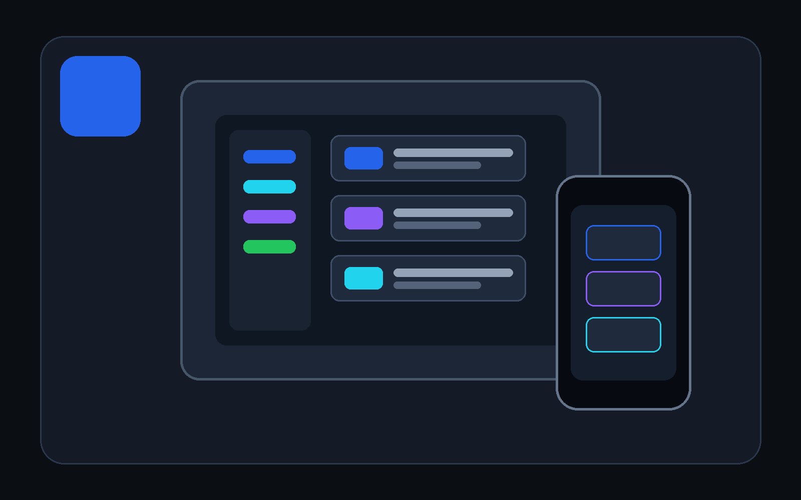

Getting started with DevDesk#
One folder. Work your way. Still your files.
DevDesk turns an ordinary folder into a useful workspace for plans, tasks, notes, research, files, relationships, APIs, and developer work. Start simple. Open advanced tools only when you need them.
You do not need to learn Markdown, frontmatter, JSON, nodes, edges, manifests, Git, or OKF before starting.

Create or open one workspace, add one useful task or note, and choose the view that helps you act.
Why people choose DevDesk#
- Work your way: List, Board, Calendar, Timeline, Outline, Files, and Relationships read the same source items.
- Keep ownership: content stays as ordinary files in the folder you chose.
- Move without rebuilding: copy or clone the folder and open
project.devdesk. - Grow without changing apps: add Markdown, JSON, OpenAPI, saved API testing, OKF checks, Diff, and scoped Git when needed.
- Control automation: choose Manual, Review changes, or bounded Safe automatic mode.
This combination is DevDesk's distinctive value. It is not a claim that every individual feature is unique.
Choose what you want to do#
| Your goal | Start with |
|---|---|
| Plan your life or a small project | New workspace > Personal plan |
| Manage study or assignments | New workspace > Study |
| Track meetings, tasks, and decisions | New workspace > Business project |
| Organise research or writing | New workspace > Research / writing |
| Keep docs and tools with software | New workspace > Software project |
| Use a folder you already have | Open folder |
| Continue recent work | Continue working |
Pick a starting path#
The profile changes the starter folders, starter files, and first visible views. It does not remove features or lock the workspace into one type of work.
Everyday life and work#
Choose Personal plan for ordinary tasks, notes, and goals. Its preview shows
Tasks, Notes, and Goals folders plus a home page, first task, inbox note,
and goals note. The first useful views are Overview, Today, List, and
Board.
Choose Business project instead when the work revolves around tasks, meetings, decisions, and documents. Its first views are Overview, Board, Timeline, and Files. Timeline becomes more useful after dated items are present.
Good first action: create one task that describes the next concrete step. Add a deadline or priority only when it helps you decide what to do.
Student work#
Choose Study. Its preview creates places for subjects, assignments, notes, and resources, with a study home, first assignment, and class-notes starter. The first views are Today, Board, Calendar, and Relationships.
Good first action: open the first assignment, replace the sample text with the real requirements, and add a due date if you want it to appear in Calendar. Keep class notes and resource links in the same workspace; connect Markdown notes only when a saved relationship is genuinely useful.
Research and writing#
Choose Research / writing. Its preview creates Outline, Notes, Sources,
and Drafts, including an outline, research-notes page, and source-notes page.
The first views are List, Outline, Relationships, and Graph.
Good first action: write the question or argument in the outline, then capture one claim or question in Research notes and one source link with a citation note in Sources. DevDesk can show saved links and backlinks, but a graph connection does not verify that a claim is true.
Software projects#
Choose Software project or open an existing project folder. The starter
creates Docs, Decisions, and API plus a project overview, architecture
note, and decision log. The first views are Files, Overview, Outline,
and Graph.
Good first action: describe the current milestone in the overview. Open source, JSON, OpenAPI, API testing, Diff, or Windows Source Control only when the project needs them. Opening a project does not run Git, scripts, terminals, or commands, and the optional Agent Connector remains off until you start it.
Your first five minutes#
- On Home, select New workspace.
- Choose a profile and enter a name.
- Review the folders and starter files. DevDesk creates only what this preview shows.
- Choose a parent folder.
- Select New > Task or New > Note.
- Write normally, then try List, Board, Calendar, Timeline, Outline, or Relationships.
Every view reads the same item. Moving a task on the Board does not create a second copy.
Four words used in the app#
- Workspace: the folder you chose.
- Item: one task, note, goal, meeting, decision, or plan.
- View: a different way to see the same items.
- Tool: an optional focused feature such as API testing, JSON, OpenAPI, Diff, or Git.
Open an existing folder#
| Your situation | Choose |
|---|---|
| The setup should survive copy or Git clone | Add project.devdesk and open |
| The folder must stay unchanged | Open once without writing |
| The folder already has portable identity | Open its project.devdesk |
DevDesk explains project.devdesk before creating it and never silently replaces an existing file. It contains portable identity and safe relative settings, not passwords, tokens, cookies, command trust, history, or personal layout.
New workspace creation is exclusive. If it fails, DevDesk deletes the new transaction folder only when its marker, exact created paths, and recorded file fingerprints still match. Otherwise it leaves the folder for review.
Where your work goes#
Your content stays in the selected folder as ordinary files. You can open those files in another editor, protect them with your normal backup, and commit appropriate files to Git.
DevDesk keeps device-only information, protected values, and rebuildable indexes outside portable project content. Removing a workspace from DevDesk removes its registration; it does not delete the folder.
Find your way around#
- Overview, Inbox, Today, Tasks, and Notes keep normal work first.
- Files browses the real folder and nested subfolders.
- Views contains reusable views and Relationships.
- Suggested changes explains managed work.
- Developer tools appears when the selected profile or file makes it useful.
- Help opens short guidance and the complete manual.
- Settings explains portability, automation, appearance, and local/private state.
Use Files > Open explorer for advanced file and folder creation. Select a compatible file to see contextual tool suggestions.
What DevDesk can do automatically#
DevDesk can rebuild read-only headings, links, backlinks, relationships, search, and health information. For project writes, choose:
- Safe automatic: only deterministic, bounded, recoverable managed maintenance.
- Review changes: see and accept or reject a saved plan.
- Manual: no project write without your action.
Automatic mode does not invent sources, verification, trust, lifecycle decisions, or project facts.
Platform behavior#
- Android: choose the folder that directly contains
project.devdesk. Access uses the Android system document-tree permission. - Windows: the current public version is available on Microsoft Store. Selected local folders can use filtered file watching. Opening a valid
project.devdeskcan restore its workspace. - Android availability: available on Google Play.
- Every size: phone, tablet, split-screen, Android freeform, and resized or snapped Windows layouts keep primary actions reachable.
- macOS and iOS: no public signed release is presented as available until one actually exists.
[!NOTE] DevDesk does not upload a project folder to a DevDesk-operated server. Sending an API request, checking a link, fetching supported online content, or opening an external page is still a network action.